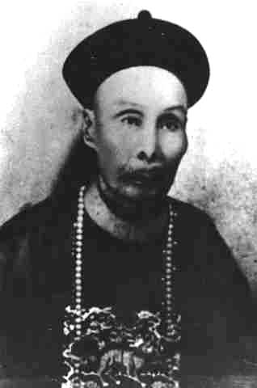
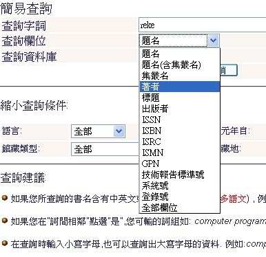

維基化．話維基(6)－誰才是專家？（上）

維基百科以最快的速度成為人類歷史上最大的百科全書。動輒數十萬的條目數量，而且可能的話，每個條目都可以擁有一定的內容篇幅。能夠成就這樣的偉業，靠得就是異於一般百科全書的編篡方式。維基百科的作者不一定是學有專精的專家學者，不管從寫作、審查到管理，更多的參與者都是業餘的愛好者，甚至於可能是門外漢。
但是這個模式並不代表維基百科可以脫離專業而存在。百科全書畢竟跟尋常的共筆不同，一般人看到「百科全書」，就會想像它是正確而權威的。而為了保證維基百科的正確，在寫作之中就會要求必須引用權威性的參考資料。如此一來雖然動手創作者就算只是個門外漢，但是當內容完全是依據權威來源寫作時，最多就是抓不到重點，文章過於雜蕪或簡略，而不至於出現太離譜錯誤。
專家頭銜貶值的年代
雖然可能會有些激進的人會認為，在內容上只准許訴諸權威，會讓一些揭露事實卻會擋人財路的意見，因為被排擠在專業體制之外，而使其意見在維基百科上缺席。不過從前文所述的原因，很容易理解這是必要之惡。但爭議並不會因為這樣子就解決，而是轉移到「這個人到底算不算專家」的判斷上。
在這裡會出現爭議，有些人直覺上可能覺得不可思議，但是我們可以想一想日常生活的經驗：台灣曾經出現過多次診所、大醫院讓密醫看診的案例。一般我們刻板印象裡的「密醫」，都是坐在有點昏暗、沒什麼現代醫療設備的國術館或民宅裡，可能會用一些詭異的藥物或是療法「治療」。對於外表光鮮明亮、設施進步的醫院裡，穿著白袍號稱有美國ＸＸＸ大學醫學博士學歷的主任，一般人哪裡能想像，其實他可能是連高中都沒唸過的騙子。
因為傳播的發達、出版的開放，人們很容易利用種種方式去操控傳媒、甚至是自辦媒體，塑造權威的形象。另外教育機構普及，讓很多良莠不齊的「學術機構」頒發的學歷證明叫人難以考證真偽；結社的自由，也讓有心人可以自行創立看似權威的機構，來授與自己專家的榮銜。我們甚至可以說，這是一個專家頭銜貶值的年代。
例如「Triangle of Life」生命三角這個與一般傳統認知不同的地震防災概念，日本震災時在台灣就曾出現網路、傳媒大肆傳載介紹，但過幾天後又開始出現澄清訊息的情況。推廣此一概念的人擁有「美國國際救援小組」首席救援者與災難部經理的頭銜，但實際上這個足以混淆視聽的小組，根本是由他所創立，而不屬於任何官方單位。因此，他的說法可靠程度，自然有所折扣。
▲ 圖1：劉永福變裝老阿婆？中文維基百科上曾經對這個說法可不可靠有所爭論。
中文維基百科中，像是「1895年台海登船臨檢事件」發生過類似的爭議。這個條目的內容說的是 1895 年，台灣民主國總統劉永福為逃避日軍追捕，登上英國船隻要回到中國的歷史事件。其中，歷史研究者郭弘斌認為劉永福當時是變裝成老太婆才能溜上船，這件事也成為台灣諺語「阿婆弄港」的來源。然而，郭弘斌雖然有多本台灣歷史的相關著作，甚至有在電視開設節目談台灣史的經歷，但其學歷是商學系學士、神學系碩士，歷史研究者的頭銜略有自封的味道。他對歷史事件的考證能力，自然也受到質疑。
維基百科「可靠來源」的指引裡設想到了這樣的情況，因此特別寫到「注意虛假的專家」。列舉出幾種可能是虛假專家的特徵：
- 明顯的令人驚訝但不廣為人知的重要說法或發現。
- 明顯的令人驚訝但並沒有被有信譽的媒體所報導過的重要說法或發現。
- 不符合其角色、會令其難堪、有爭議、或是與其之前的言論相互衝突的人的發言。
- 不具有該領域專業之有關的學者所發表的或是與大多數人所接受的說法衝突的言論或是說法。當其鼓吹者為了打擊另一方而宣稱另外一方背後有著「陰謀論」時要尤其的小心。
指引的譯文略微生硬（當然，也許之後會在維基人的努力下把它們譯得通順點），但是簡單地說，看到觀念大革命的說法，別急著相信、然後堅持放上維基，多半可能是譁眾取寵或別有目的、意識形態的意見。在來源可靠性的評估上，是必須給予較低等級的。
注意頭銜，不昧於頭銜
另外有一些情況是，專家之所以稱為「專」，表示他對於某些範疇確實有所長，但是在其他的領域，卻不一定樣樣拿手。在這個學術專業分工細緻的年代裡，隔行如隔山，連相關領域的專家有時候都難免在一些專題上犯下錯誤。筆者記得在大學時代通識課程中，就聽到從事文化研究的教授，在統計各時代漢字字數的時候，以《說文解字》當成漢隷字數的依據、《廣韻》做為宋代漢字字數的依據。然而《說文解字》收字是以小篆為主、兼及古文；《廣韻》由於是韻書，對於破音字會重覆收錄，造成字數暴增。這些細節錯誤，當他人引用其著作時，或許就有可能傳播到維基百科上來。

▲ 圖2：《說文解字》雖然是漢代許慎的作品，可是收的字真的不是漢隸。
當然，這個例子並不是要說，沒有一個專家可以被信賴。這裡要談的只是，在條目的可信度被質疑的時候，應該要避免過於簡單的思考模式。通常，由於維基的寫作者只是業餘愛好者，未必是行家。所以要完全從參考資料的內容，來判斷其是否可靠，有執行上的難度。因此維基百科對於可靠來源判別的方式，的確一定程度上依賴旁證的存在。大學教授、產業界知名人物、大出版社…是在常識裡比較可靠的行家。然而不代表只要有了這幾項的頭銜，就成為不可被質疑的金身。在面臨爭議時，要更謹慎地去驗證幾個問題：
第一，這個「專家」的頭銜，是否具有爭議？學歷是否來自非正規的教育機構（函授、社區大學）？其任職的團體組成成員如何，是否具公信力？他獲得的獎項，審查委員是否經過嚴格挑選、機制是否公平合理？這些問題若有可疑之處，在網路時代常常可以透過搜尋找到蛛絲馬跡，許多虛假的專家往往無法通過這個層次的考驗。
第二，這個條目所觸及的議題，是否為這個「專家」專精的範疇？例如要寫「賽德克族」的條目時，人文學院教授的論文應該會比魏德聖導演的電影可靠，民族系教授的論文又比中文系教授的可靠，而平日從事台灣原住民研究的民族系教授，其論文又比同系裡研究美洲民族的教授可靠些。如果可能，想辦法透過大學網頁登錄的資訊、過去出版紀錄等等訊息，去比對出專家在此一問題上專精的可能性。
▲ 圖3：圖書館資料庫的「作者」搜尋，可以協助找出一個專家真正專精的範圍。
第三，這個條目所觸及的議題，是否與這個「專家」有切身的利益衝突。某醫師即使是心肺方面的醫學權威，但他接受煙商贊助之下做出來的吸煙對心肺功能影響研究報告，就十分值得懷疑。當然，利益關係常是隱而不顯、必須要靠知情者對媒體揭露才會曝光的，所以有時候這樣的資訊往往與負面的爆料黑函夾雜在一起。到底是真的有糾葛、還是抹黑的流言，有時候也必須謹慎討論判斷。
檢視這些問題都不需要十分專業的能力，只要多用心，肯花時間去查證、去搜尋，就能夠找到答案。而更令人振奮的地方是，因為維基百科是一個社群合作的作品，這些查證的工作可以由多個維基編輯分頭去完成，不必通通交給被質疑的作者承擔！你唯一要做的只是敞開心胸，當你所引用的參考資料被其他編者多方舉證質疑的時候，感激他們替你補上了查證的工作，而不是視他們為來找碴的麻煩鬼，那就能夠促進良好的合作關係了。
作者簡介
Reke，台灣維基社群成員，PTT 電影板板主，主業為文字工作者。著迷於電影，耽溺於文字；在現實裡怯弱地柔從，在評論裡驕傲地反抗。電影部落格：https://rekegiga.blogspot.com/
You may be interested in the following articles:
- 維基化．話維基(7)－誰才是專家？（下） - 2012-02-17
- 維基化．話維基(5)－「官方」的迷思 - 2012-01-16
- 維基化．話維基(4)－我的條目不出名？ - 2011-12-20
- 維基化．話維基(3)－誰是條目的所有人？ - 2011-11-24
- 維基化．話維基(2)－讓政治爭議不再棘手 - 2011-11-09
- 維基化．話維基(1)－從腦袋開始維基化 - 2011-10-24
OSSF Newsletter : 第 189 期 保護雲端隱私的技術：Homomorphic Encryption 與 Unhosted
Tags: 維基化, 維基百科, 方針, 指引, Wikipedia, 專家, expert,
Category: FOSS Forum